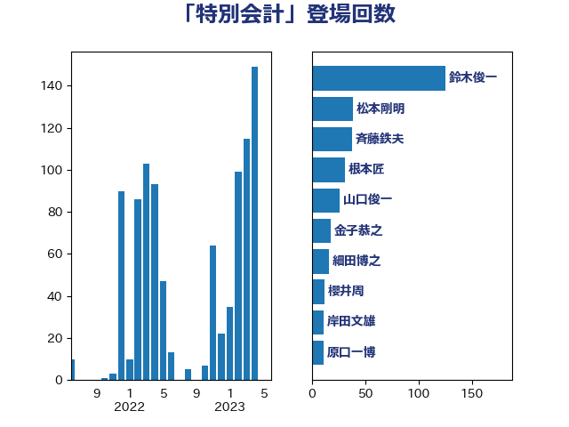

単語「特別会計」

| 鈴木俊一 | 自由民主党 | 125 回 |
| 松本剛明 | 自由民主党 | 39 回 |
| 斉藤鉄夫 | 公明党 | 38 回 |
| 根本匠 | 自由民主党 | 31 回 |
| 山口俊一 | 自由民主党 | 26 回 |
| 金子恭之 | 自由民主党 | 18 回 |
| 細田博之 | 自由民主党 | 16 回 |
| 櫻井周 | 立憲民主党 | 12 回 |
| 岸田文雄 | 自由民主党 | 11 回 |
| 原口一博 | 立憲民主党 | 11 回 |
| 西村康稔 | 自由民主党 | 10 回 |
| 永岡桂子 | 自由民主党 | 10 回 |
| 井上貴博 | 自由民主党 | 10 回 |
| 萩生田光一 | 自由民主党 | 9 回 |
| 山本順三 | 自由民主党 | 9 回 |
| 大河原まさこ | 立憲民主党 | 9 回 |
| 斎藤嘉隆 | 立憲民主党 | 8 回 |
| 古賀篤 | 自由民主党 | 8 回 |
| 加藤勝信 | 自由民主党 | 8 回 |
| 伊佐進一 | 公明党 | 8 回 |
| おおつき紅葉 | 立憲民主党 | 8 回 |
| 野村哲郎 | 自由民主党 | 7 回 |
| 田畑裕明 | 自由民主党 | 7 回 |
| 浜口誠 | 国民民主党 | 7 回 |
| 櫛渕万里 | れいわ新選組 | 7 回 |
| 中司宏 | 日本維新の会 | 7 回 |
| 福田昭夫 | 立憲民主党 | 6 回 |
| 田村貴昭 | 日本共産党 | 6 回 |
| 湯原俊二 | 立憲民主党 | 6 回 |
| 江田憲司 | 立憲民主党 | 6 回 |
| 武村展英 | 自由民主党 | 6 回 |
| 末松信介 | 自由民主党 | 6 回 |
| 後藤茂之 | 自由民主党 | 6 回 |
| 岩渕友 | 日本共産党 | 6 回 |
| 岡本三成 | 公明党 | 6 回 |
| 山田美樹 | 自由民主党 | 6 回 |
| 山口壯 | 自由民主党 | 6 回 |
| 宮本徹 | 日本共産党 | 6 回 |
| 前原誠司 | 国民民主党 | 6 回 |
| 中西祐介 | 自由民主党 | 6 回 |
| 道下大樹 | 立憲民主党 | 5 回 |
| 石井拓 | 自由民主党 | 5 回 |
| 浜田靖一 | 自由民主党 | 5 回 |
| 柳ヶ瀬裕文 | 日本維新の会 | 5 回 |
| 柘植芳文 | 自由民主党 | 5 回 |
| 岸真紀子 | 立憲民主党 | 5 回 |
| 山東昭子 | 自由民主党 | 5 回 |
| 山本博司 | 公明党 | 5 回 |
| 尾身朝子 | 自由民主党 | 5 回 |
| 住吉寛紀 | 日本維新の会 | 5 回 |
| 長浜博行 | 無所属 | 4 回 |
| 赤羽一嘉 | 公明党 | 4 回 |
| 稲津久 | 公明党 | 4 回 |
| 玉木雄一郎 | 国民民主党 | 4 回 |
| 片山大介 | 日本維新の会 | 4 回 |
| 沢田良 | 日本維新の会 | 4 回 |
| 平木大作 | 公明党 | 4 回 |
| 小野泰輔 | 日本維新の会 | 4 回 |
| 三木圭恵 | 日本維新の会 | 4 回 |
| 高木毅 | 自由民主党 | 3 回 |
| 阿部知子 | 立憲民主党 | 3 回 |
| 長友慎治 | 国民民主党 | 3 回 |
| 野中厚 | 自由民主党 | 3 回 |
| 西銘恒三郎 | 自由民主党 | 3 回 |
| 西村明宏 | 自由民主党 | 3 回 |
| 緒方林太郎 | 無所属 | 3 回 |
| 秋野公造 | 公明党 | 3 回 |
| 礒崎哲史 | 国民民主党 | 3 回 |
| 石井浩郎 | 自由民主党 | 3 回 |
| 田島麻衣子 | 立憲民主党 | 3 回 |
| 渡辺猛之 | 自由民主党 | 3 回 |
| 武部新 | 自由民主党 | 3 回 |
| 松村祥史 | 自由民主党 | 3 回 |
| 杉尾秀哉 | 立憲民主党 | 3 回 |
| 川田龍平 | 立憲民主党 | 3 回 |
| 山田賢司 | 自由民主党 | 3 回 |
| 山田勝彦 | 立憲民主党 | 3 回 |
| 小沢雅仁 | 立憲民主党 | 3 回 |
| 宮本岳志 | 日本共産党 | 3 回 |
| 守島正 | 日本維新の会 | 3 回 |
| 大家敏志 | 自由民主党 | 3 回 |
| 中川貴元 | 自由民主党 | 3 回 |
| 階猛 | 立憲民主党 | 2 回 |
| 阿部司 | 日本維新の会 | 2 回 |
| 門山宏哲 | 自由民主党 | 2 回 |
| 西岡秀子 | 国民民主党 | 2 回 |
| 簗和生 | 自由民主党 | 2 回 |
| 竹谷とし子 | 公明党 | 2 回 |
| 福島みずほ | 社会民主党 | 2 回 |
| 神田潤一 | 自由民主党 | 2 回 |
| 渡辺博道 | 自由民主党 | 2 回 |
| 津島淳 | 自由民主党 | 2 回 |
| 池田佳隆 | 自由民主党 | 2 回 |
| 横山信一 | 公明党 | 2 回 |
| 新谷正義 | 自由民主党 | 2 回 |
| 新妻秀規 | 公明党 | 2 回 |
| 市村浩一郎 | 日本維新の会 | 2 回 |
| 小林鷹之 | 自由民主党 | 2 回 |
| 小島敏文 | 自由民主党 | 2 回 |
| 大西健介 | 立憲民主党 | 2 回 |
| 古賀之士 | 立憲民主党 | 2 回 |
| 古川禎久 | 自由民主党 | 2 回 |
| 務台俊介 | 自由民主党 | 2 回 |
| 冨樫博之 | 自由民主党 | 2 回 |
| 伊藤岳 | 日本共産党 | 2 回 |
| 中根一幸 | 自由民主党 | 2 回 |
| 中川康洋 | 公明党 | 2 回 |
| 齋藤健 | 自由民主党 | 1 回 |
| 高橋光男 | 公明党 | 1 回 |
| 高木宏壽 | 自由民主党 | 1 回 |
| 高市早苗 | 自由民主党 | 1 回 |
| 馬場伸幸 | 日本維新の会 | 1 回 |
| 青山周平 | 自由民主党 | 1 回 |
| 鈴木庸介 | 立憲民主党 | 1 回 |
| 金子俊平 | 自由民主党 | 1 回 |
| 野間健 | 立憲民主党 | 1 回 |
| 野田国義 | 立憲民主党 | 1 回 |
| 重徳和彦 | 立憲民主党 | 1 回 |
| 進藤金日子 | 自由民主党 | 1 回 |
| 輿水恵一 | 公明党 | 1 回 |
| 赤澤亮正 | 自由民主党 | 1 回 |
| 若松謙維 | 公明党 | 1 回 |
| 羽生田俊 | 自由民主党 | 1 回 |
| 竹詰仁 | 国民民主党 | 1 回 |
| 福島伸享 | 無所属 | 1 回 |
| 石井啓一 | 公明党 | 1 回 |
| 田嶋要 | 立憲民主党 | 1 回 |
| 猪瀬直樹 | 日本維新の会 | 1 回 |
| 滝沢求 | 自由民主党 | 1 回 |
| 清水貴之 | 日本維新の会 | 1 回 |
| 浅野哲 | 国民民主党 | 1 回 |
| 浅尾慶一郎 | 自由民主党 | 1 回 |
| 森屋宏 | 自由民主党 | 1 回 |
| 梅谷守 | 立憲民主党 | 1 回 |
| 柴田巧 | 日本維新の会 | 1 回 |
| 木村英子 | れいわ新選組 | 1 回 |
| 掘井健智 | 日本維新の会 | 1 回 |
| 後藤祐一 | 立憲民主党 | 1 回 |
| 島尻安伊子 | 自由民主党 | 1 回 |
| 山井和則 | 立憲民主党 | 1 回 |
| 尾辻秀久 | 無所属 | 1 回 |
| 小野寺五典 | 自由民主党 | 1 回 |
| 小寺裕雄 | 自由民主党 | 1 回 |
| 寺田静 | 無所属 | 1 回 |
| 室井邦彦 | 日本維新の会 | 1 回 |
| 奥野総一郎 | 立憲民主党 | 1 回 |
| 堀井学 | 自由民主党 | 1 回 |
| 和田義明 | 自由民主党 | 1 回 |
| 吉田統彦 | 立憲民主党 | 1 回 |
| 勝部賢志 | 立憲民主党 | 1 回 |
| 佐藤信秋 | 自由民主党 | 1 回 |
| 佐々木紀 | 自由民主党 | 1 回 |
| 伊藤達也 | 自由民主党 | 1 回 |
| 伊藤孝恵 | 国民民主党 | 1 回 |
| 今枝宗一郎 | 自由民主党 | 1 回 |
| 上田清司 | 国民民主党 | 1 回 |